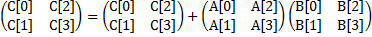

Shout-out: Part of today's exercises (3-5) were made possible by TA Nikhil!
The Lab Files
Copy the lab files from the instructional servers to your lab account with
$ cp -r ~cs61c/labs/10/ ~/labs/10/
Note that all code using SSE instructions is only guaranteed to work on the hive machines.
Many newer processors support SSE intrinsics, so it is certainly possible that your machine will be sufficient, but you may not see accurate speedups. Ideally, you should ssh into one of the hive machines to run this lab. Additionally, many of the performance characteristics asked about later on this lab are more likely to show up on the Hive.
Exercises
Exercise 1: Familiarize Yourself with the SIMD Functions
Given the large number of available SIMD intrinsics we want you to learn how to find the ones that you'll need in your application.
Intel hosts a variety of tools related to intrinsics, which you can find here (but these are not necessary for this lab).
The one that we're particularly interested in is the Intel Intrinsics Guide. Open this page and once there, click the checkboxes for everything that begins with "SSE" (SSE all the way to SSE4.2).
Do your best to interpret the new syntax and terminology. Find the 128-bit intrinsics for the following SIMD operations (one for each):
- Four floating point divisions in single precision (i.e. float)
- Sixteen max operations over signed 8-bit integers (i.e. char)
- Arithmetic shift right of eight signed 16-bit integers (i.e. short)
HINT: If you're overwhelmed, just try clicking on a function whose name you understand! Maybe try one of the "add" functions. Now read the "Description" and "Operation" sections in the drop-down menu opened by clicking the instruction. If you clicked an "add" function, you should've read something like, "Add packed X-bit integers in a and b, and store the results in dst." Then you should realize that the value "X" also appears in the function name! The pattern you see here can be described as follows:
__m128i _mm_add_epiX adds together (128/X) packed X-bit integers.
Another hint: Things that say "epi" or "pi" deal with integers, and those that say "ps" or "pd" deal with single precision and double precision floats.
Checkoff [1/5]
- Record the 3 (three) intrinsics we specified above in a text file to show your TA.
Exercise 2: Reading SIMD Code
In this exercise you will consider (not implement) the vectorization of 2-by-2 matrix multiplication in double precision (the code we looked at in the SIMD lecture):

The math in the above image amounts to the following arithmetic operations:
C[0] += A[0]*B[0] + A[2]*B[1];
C[1] += A[1]*B[0] + A[3]*B[1];
C[2] += A[0]*B[2] + A[2]*B[3];
C[3] += A[1]*B[2] + A[3]*B[3];
You are given the code sseTest.c that implements these operations in a SIMD manner.
The following intrinsics are used:
| __m128d _mm_loadu_pd( double *p ) | returns vector (p[0], p[1]) |
| __m128d _mm_load1_pd( double *p ) | returns vector (p[0], p[0]) |
| __m128d _mm_add_pd( __m128d a, __m128d b ) | returns vector (a0+b0, a1+b1) |
| __m128d _mm_mul_pd( __m128d a, __m128d b ) | returns vector (a0b0, a1b1) |
| void _mm_storeu_pd( double *p, __m128d a ) | stores p[0]=a0, p[1]=a1 |
Compile sseTest.c into x86 assembly (not MIPS!) by running:
make sseTest.s
Now, observe the general structure of the code in sseTest.s. See if you can find the for-loop in sseTest.s (hint: it's a trick question, see exercise 4) and see if you can identify which instructions are performing SIMD operations. Be prepared to describe to your TA what is happening in general, but you do not need to spend too much time on this section (recall that we are not interested in x86 assembly in this class). We don't expect you to tell us exactly what the code is doing line by line. If you're stuck with decipering the x86 assembly, refer to the original sseTest.c file that contains the matching C code.
HINT: Usually loops in assembly code require some kind of jumping or branching... can you find any in this code?Checkoff [2/5]
- Describe where the loop from sseTest.c went in sseTest.s, and point out some of the SIMD instructions.
Exercise 3: Writing SIMD Code
COMMON LITTLE MISTAKES
The following are bugs that the staff have noticed were preventing students from passing the tests (bold text is what you should not do):
- Trying to store your sum vector into a long long int array. Use an int array. Side note: why?? The return value of this function is indeed a long long int, but that's because an int isn't big enough to hold the sum of all the values across all iterations of the outer loop. However, it is big enough to hold the sum of all the value accross a single iteration of the outer loop. This means you'll want to store your sum vector into an int array after every iteration of the outer loop and add the total sum to the final result result.
- Re-initializing your sum vector. Make sure when you add to your running sum vector, you aren't declaring a new sum vector!!
- Forgetting the CONDITIONAL in the tail case!
- Adding to an UNINITIALIZED array! If you add stuff to your result array without initializing it, you are adding stuff to garbage, which makes the array still garbage! Using storeu before adding stuff is okay though.
NOTE: We'll be changing directories now! Run the command:
$ cd lab10-branch_prediction
We've got one header file common.h that has some code to sum the elements of a really big array. It's a minor detail that it randomly does this 1 << 16 times... but you don't need to worry about that. We also pincer the execution of the code between two timestamps (that's what the clock() function does) to measure how fast it runs! The file randomized.c is the one which will have a main function to run the sum functions. The file sorted.c does the same, but with an extra detail which we will not worry about unitl Exercise 5.
For Exercise 3, you will vectorize/SIMDize the following code in common.h to speed up the naive implementation shown here:
long long int sum(unsigned int vals[NUM_ELEMS]) {
long long int sum = 0;
for(unsigned int w = 0; w < OUTER_ITERATIONS; w++) {
for(unsigned int i = 0; i < NUM_ELEMS; i++) {
if(vals[i] >= 128) {
sum += vals[i];
}
}
}
return sum;
Note: you need only vectorize the inner loop.
You might find the following intrinsics useful (Hint: You're going to need all of these functions):
| __m128i _mm_setzero_si128( ) | returns 128-bit zero vector | Maybe to initialize something |
| __m128i _mm_loadu_si128( __m128i *p ) | returns 128-bit vector stored at pointer p | You've got an array vals... how do you get some elements in vector (__m128i) form? |
| __m128i _mm_add_epi32( __m128i a, __m128i b ) | returns vector (a0+b0, a1+b1, a2+b2, a3+b3) | This is a summing function after all! You'll definitely need to add some stuff together! |
| void _mm_storeu_si128( __m128i *p, __m128i a ) | stores 128-bit vector a at pointer p | Load goes from pointer to vector, this goes from vector to pointer! |
| __m128i _mm_cmpgt_epi32( __m128i a, __m128i b ) | returns the vector (ai>bi ? 0xffffffff : 0x0 for i from 0 to 3)
AKA a 32-bit all-1s mask if ai > bi and a 32-bit all-0s mask otherwise |
cmpgt is how SSE says, "compare greater than." How do you use this to implement the if statement? |
| __m128i _mm_and_si128( __m128i a, __m128i b ) | returns vector (a0&b0, a1&b1, a2&b2, a3&b3) | Mask stuff |
Task: Start with sum, and use SSE instrinsics to implement the sum_simd() function, which needs to be vectorized and achieve a significant amount of speedup.
How do I do this?
Recall that the SSE intrinsics are basically functions which perform operations on multiple pieces
of data in a vector in parallel. This turns out to be faster than running through a for loop and
applying the operation once for each element in the vector.
In our sum function, we've got a basic structure of iterating through an array. On every iteration,
we add an array element to a running sum. To vectorize, you should add a few array elements to a sum vector in parallel and then consolidate the individual values of the sum vector into our desired sum at the end.
Hint 1: __m128i is the data type for 128-Bit vectors which will be handled by Intel's special 128-bit vector. We'll be using them to encode 4 (four) 32-bit ints.
Hint 2: We've left you a vector called _127 which contains four copies of the number 127. You should use this to compare with some stuff when you implement the condition within the sum loop.
Hint 3: DON'T use the store function (_mm_storeu_si128) until after completing the inner loop! It turns out that storing is very costly and performing a store in every iteration will actually cause your code to slow down. However, if you wait until after the outer loop completes you may have overflow issues.
Hint 4: It's bad practice to index into the __m128i vector like they are arrays. You should store them into arrays first with the storeu function, and then access the integers elementwise by indexing into the array.
Hint 5: READ the function declarations in the above table carefully! You'll notice that the loadu and storeu take __m128i* type arguments. You can just cast an int array to a _m128i pointer. Alternatively, you could skip the typecast at the cost of a bunch of compiler warnings.
To compile and run your code, run the following commands:
$ cd lab10-branch_prediction $ make $ ./randomized
Sanity check: The naive version runs at about 25 seconds on the hive machines, and your SIMDized version should run in about 5-6 seconds. The naive function may take a long time to run! Do not try commenting it out, since we rely on that result for comparing against a reference; sometimes code can take a long time to run and this is one of those cases.
Checkoff [3/5]
- Show your TA your working code and performance improvement from sum to sum_simd.
Exercise 4: Loop Unrolling
To obtain even more performance improvement, carefully unroll the SIMD vector sum code that you created in the previous exercise. This should get you a little more increase in performance from sum_simd (a few fractions of a second). As an example of loop unrolling, consider the supplied function sum_unrolled():
long long int sum_unrolled(unsigned int vals[NUM_ELEMS]) {
long long int sum = 0;
for(unsigned int w = 0; w < OUTER_ITERATIONS; w++) {
for(unsigned int i = 0; i < NUM_ELEMS / 4 * 4; i += 4) {
if(vals[i] >= 128) sum += vals[i];
if(vals[i + 1] >= 128) sum += vals[i + 1];
if(vals[i + 2] >= 128) sum += vals[i + 2];
if(vals[i + 3] >= 128) sum += vals[i + 3];
}
// This is what we call the TAIL CASE
for(unsigned int i = NUM_ELEMS / 4 * 4; i < NUM_ELEMS; i++) {
if (vals[i] >= 128) {
sum += vals[i];
}
}
}
return sum;
}
Conceptual Task: Consider why unrolling the loop like this is useful at all.
Hint: What part of the for loop do we have to do LESS if we unroll the loop?
Task: Within common.h, copy your sum_simd() code into sum_simd_unrolled() and unroll it 4 (four) times.
To compile your code, run the following command:
make
To run your code, run the following command:
./randomized
Checkoff [4/5]
- Show your TA your working code and performance improvement from sum_simd to sum_simd_unrolled.
- Answer question: Why does loop unrolling get you a speedup?
Exercise 5: Performance Comparisons
You might have noticed that we've only been running the randomized executable so far. That's because now, we want to compare it to the code in sorted.c! Recall that executing the code in randomized.c just sums up the elements of a huge array of random ints. The only difference with sorted.c is that the array is sorted before running the sum functions! Let's check out the performance by running:
$ ./sorted
Task 1: You should have noticed that the naive sum function ran a lot
faster than it did when the array was randomized. Your task is to think about WHY.
Recall that there is a check within our sum function which tells us to only add to the running total
if the current element is greater than or equal to 128. Question: what kind of assembly instruction
would need to be used to implement this? From your answer to the preceding question, recall that these kinds
of instructions introduce hazards in the datapath pipeline, and that one technique to deal with them was
to have a __________ that chooses to always execute the first instruction of one of the outcomes of the
_________.
It turns out that much like caches, these mechanism fare better when our code is more predictable. They make their predictions based on what's been happening most recently at the ________ in question. In particular, if our code seems to make the same decision at the __________ many times in a row, it will probably predict that that particular outcome will happen again.
Task 2: It's neat that sorting the array gets us such a high degree of speedup,
but why didn't the sum_simd or sum_simd_unrolled speed up? To think about this,
you need to think about how exactly the original condition is checked in the SIMDized versions that
you wrote. What is the important SSE function that you used?
It turns out that this function is implemented without the use of branch instructions at the assembly level!
What does this fact tell you about the advantages of sorting the array in the SIMDized code?
Task 3: The last observation we should make is that out of the 4 versions of the sum function running on a sorted array, the one that performs best is actually sum_unrolled as opposed to sum_simd_unrolled (if you didn't see this result when running your code (it can be finicky), don't worry and just presume that this could happen; explain why this is possible)! If you ran randomized however, the sum_simd version is actually better than sum_unrolled. Question: What does this tell you about the advantages of successful branch prediction in comparison to data-level parallelism in this special case where the data is sorted?
Checkoff [5/5]
- Why does sorting the array make sum faster?
- Why does sorting the array NOT make sum_simd or sum_simd_unrolled much faster?
- Why does sum_unrolled outperform sum_simd when the array is sorted (if you didn't see this explain why this is possible)? Why DOESN'T it do so when the array is random?